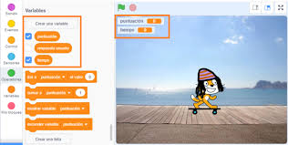

Bienvenido a Juegos Sencillos en Scratch
En este sitio encontrarás una colección de juegos sencillos creados con Scratch. ¡Esperamos que te diviertas explorándolos!
Nuestros Juegos
Juego 1: Aventura Espacial

En Aventura Espacial, guiarás a tu nave a través de un campo de asteroides. ¡Evita los obstáculos y recolecta estrellas para ganar puntos!
Juego 2: Desplazamiento
Controla a tu presonaje favorito para moverse por la pantalla
Juego 3: POLLITO GORDITO
Un juego especial para demostrar tu habilidad para comer pasteles